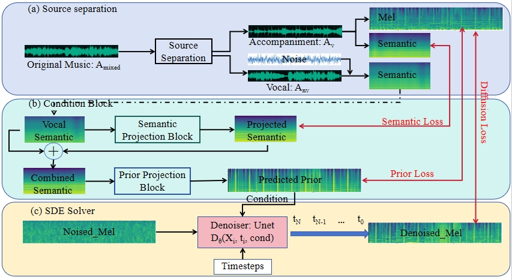

FastSAG: Towards Fast Non-Autoregressive Singing Accompaniment Generation
1Jianyi Chen, 1Wei Xue, 2Xu Tan, 1Zhen Ye, 1Qifeng Liu, 1Yike Guo
1The Hong Kong University of Science and Technology, 2Microsoft Research Asia
Abstract
Singing Accompaniment Generation (SAG), which generates instrumental music to accompany input vocals, is crucial to developing human-AI symbiotic art creation systems. The state-of-the-art method, SingSong, utilizes a multi-stage autoregressive (AR) model for SAG, however, this method is extremely slow as it generates semantic and acoustic tokens recursively, and this makes it impossible for real-time applications. In this paper, we aim to develop a Fast SAG method that can create high-quality and coherent accompaniments. A non-AR diffusion-based framework is developed, which by carefully designing the conditions inferred from the vocal signals, generates the Mel spectrogram of the target accompaniment directly. With diffusion and Mel spectrogram modeling, the proposed method significantly simplifies the AR token-based SingSong framework, and largely accelerates the generation. We also design semantic projection, prior projection blocks as well as a set of loss functions, to ensure the generated accompaniment has semantic and rhythm coherence with the vocal signal. By intensive experimental studies, we demonstrate that the proposed method can generate better samples than SingSong, and accelerate the generation by at least 30 times.

In-domain Generation Samples
The following samples are generated from in-domain evaluation dataset. Although the in-domain evaluation dataset is not used for training, they follow a similar distribution. We divide the 1.2 million pairs of 10-second clips into training and (in-domain) evaluation datasets, with 2,000 samples for in-domain evaluation.
Vocal Input
Ground Truth
FastSAG
FastSAG-interpolation
SingSong
RandSong
Out-domain Generation Samples
The out-of-domain zero-shot evaluation dataset is additionally built from MUSDB18 dataset, which is also the evaluation dataset of SingSong. Following the same procedures for training data processing on the MUSDB18 test dataset, we obtain 348 paired clips. The MUSDB18 training dataset is not used for training so the MUSDB18 test dataset is zero-shot.
Vocal Input
Ground Truth
FastSAG
FastSAG-interpolation
SingSong
RandSong